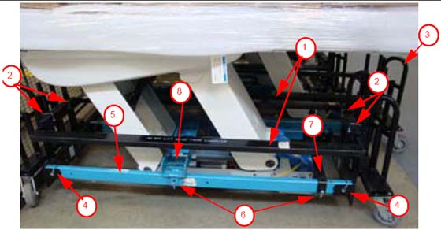
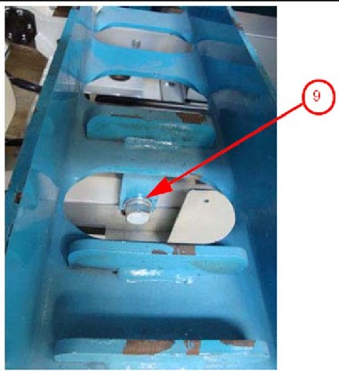

Illustration 3: Table Shipping Dollies

Table 1: Description of Table Shipping Dollies
| Item | Description |
| 1 | Side Rails (two rails, black, one each side) |
| 2 | Quick Release Pins (for side rails, two on each side) |
| 3 | Dolly Ends (two, one each end) |
| 4 | Quick Release Pins (for dolly ends, two each side) |
| 5 | Table Dolly Lifting Tube (two, blue, one each side) |
| 6 | Quick Release Pins (for dolly lifting tube, two each side) |
| 7 | Front Attachment Bar (black, one; 19 mm table base bolt located under the bar, not shown) |
| 8 | Back Attachment Bar (blue, one; see Illustration 4) |
| 9 | Table Base Bolt (see Illustration 4) |
Illustration 4: Close-up of table base connection
